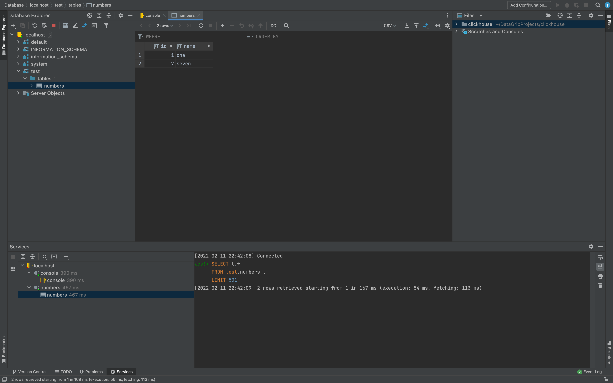

说明
常见的数据库我基本都深度使用过，经验来看在单机上运行交易系统和数据库多少都会存在如何分配计算资源和峰值占用的问题，多机路由互联的模式存在网络不稳定（高频交互）并且也会占用路由负载。目前看将行情收录、数据分析的模块与交易系统模块的分别部署在不同的机器上面在后期运维相对省心。时间戳微小差异和网络抖动这些对于非超高频交易的系统和策略影响有限。将交易系统单独部署机房独立主机命中率受到多种因素影响，数据库只是其中一方面，一种比较笨的方式是每日预加载数据到交易系统内嵌的缓存数据库提升系统效率。
对行情收录和分析的数据库，关系型和时序数据库在实际使用中差异不大，对比几个常见的数据感觉在单机部署数据库的情况下clickhouse使用最方便性能最好。
对交易系统内的缓存数据库，进程内可以直接使用unordered_map或内嵌数据库
对跨进程数据通信没有特别好的方式，目前如下的这几种方式都在使用
- 一写多读的kv数据库 多进程无锁KV数据库
- 一写多读的无锁队列 yijinjing-lite
- 基于共享内存的MQ框架库 NNG: Lightweight Messaging Library
Clickhouse
听说官方客户端ClickHouse C++ client性能似乎不是最好的，在连续批量写入的时候占用资源更多一些。不过行情收录模型本身也不是实时系统的组成部分，只是用来收录行情做数据分析，为了保持一致性故而这里还是使用官方的客户端。
Please note that Client instance is NOT thread-safe. I.e. you must create a separate Client for each thread or utilize some synchronization techniques.
这个客户端不是线程安全的，多线程写入需要自己管理。根据之前的经验，在多线程频繁写入的情景下clickhouse处理性能一般，通常可以将多线程的数据累积在任务队列里面，批次写入。
行情收录模块使用Buffer Table Engine，ctp接口回调函数通过无锁队列批次提交到缓存区，缓冲数据写入RAM中，周期性地将数据刷新落地存储的行情表中。
1 | CREATE TABLE tick_data.buffer_tick_data AS tick_data.am_20220617 ENGINE Buffer( |
C++ Client
编译配置cpp-client，注意cmake设置，需要添加include_directories(contrib).
1
2
3
4
5# 注意clickhouse的依赖
include_directories(contrib)
add_subdirectory(contrib)
target_link_directories(${PROJECT_NAME} PUBLIC "${PROJECT_SOURCE_DIR}/lib")
target_link_libraries(${PROJECT_NAME} PUBLIC clickhouse-cpp-lib)
运行测试文件 1
2
3
4
5
6
7
8
9
10
11
12
13
14
15
16
17
18
19
20
21
22
23
24
25
26
27
28
29
30
31
32
33
34
35
36
37
38
39
40
41
42
43
44
45
46
47
48
49
50
51
52
53
54
55
56
57
58
void test_client() {
using namespace clickhouse;
// Initialize client connection.
Client client(ClientOptions()
.SetHost("localhost")
.SetPort(9000)
.SetUser("default")
.SetPassword("default")
.SetPingBeforeQuery(true));
// Create a table.
client.Execute("CREATE DATABASE IF NOT EXISTS test;");
client.Execute("CREATE TABLE IF NOT EXISTS test.numbers (id UInt64, name String) ENGINE = Memory");
// Insert some values.
{
Block block;
auto id = std::make_shared<ColumnUInt64>();
id->Append(1);
id->Append(7);
auto name = std::make_shared<ColumnString>();
name->Append("one");
name->Append("seven");
block.AppendColumn("id", id);
block.AppendColumn("name", name);
client.Insert("test.numbers", block);
}
// Select values inserted in the previous step.
client.Select("SELECT id, name FROM test.numbers", [](const Block &block) {
for (size_t i = 0; i < block.GetRowCount(); ++i) {
std::cout << block[0]->As<ColumnUInt64>()->At(i) << " "
<< block[1]->As<ColumnString>()->At(i) << "\n";
}
});
// Delete table.
client.Execute("DROP TABLE test.numbers");
}
int main() {
std::cout << "Hello, World!" << std::endl;
test_client();
return 0;
}
正常运行可见测试数据

常用操作
Create client 1
2
3
4
5
6clickhouse::Client client(clickhouse::ClientOptions()
.SetHost("single-clickhouse-server")
.SetPort(9000)
.SetUser("default")
.SetPassword("default")
.SetPingBeforeQuery(true));
Create a table. 1
client.Execute("CREATE DATABASE IF NOT EXISTS test_db;");
Insert Data 1
2
3
4
5
6
7
8
9
10
11
12
13
14
15
16
17
18
19
20
21
22
23
24
25
26
27
28
29
30// tick-data
TickData tick_data{};
tick_data.local_time = 201808081111;
tick_data.TradingDay = "20220617";
tick_data.InstrumentID = "IF2212";
tick_data.LastPrice = 4000.0;
tick_data.Volume = 4000;
// cur
auto local_time = std::make_shared<clickhouse::ColumnInt64>();
auto TradingDay = std::make_shared<clickhouse::ColumnString>();
auto InstrumentID = std::make_shared<clickhouse::ColumnString>();
auto LastPrice = std::make_shared<clickhouse::ColumnFloat64>();
auto Volume = std::make_shared<clickhouse::ColumnInt64>();
clickhouse::Block block;
// data
local_time->Append(tick_data.local_time);
TradingDay->Append(tick_data.TradingDay);
LastPrice->Append(tick_data.LastPrice);
Volume->Append(tick_data.Volume);
InstrumentID->Append(tick_data.InstrumentID);
// to ck
block.AppendColumn("local_time", local_time);
block.AppendColumn("TradingDay", TradingDay);
block.AppendColumn("LastPrice", LastPrice);
block.AppendColumn("Volume", Volume);
block.AppendColumn("InstrumentID", InstrumentID);
client.Insert("test_db.test_table", block);
Query Data 1
2
3
4
5
6
7
8
9
10
11client.Select("SELECT * FROM test_db.test_table;", [](const clickhouse::Block &block) {
for (size_t i = 0; i < block.GetRowCount(); ++i) {
std::cout << block[0]->As<clickhouse::ColumnString>()->At(i) << " "
<< block[1]->As<clickhouse::ColumnString>()->At(i) << " "
<< block[2]->As<clickhouse::ColumnFloat64>()->At(i) << " "
<< block[3]->As<clickhouse::ColumnInt64>()->At(i) << " "
<< block[4]->As<clickhouse::ColumnInt64>()->At(i) << " "
<< "\n";
}
});
A Fast Lock-Free Queue for C++
使用single-producer, single-consumer lock-free queue对接ctp行情回调函数，避免行情传输速度太快，本地处理逻辑运行效率太低导致的阻塞。
使用single-producer, single-consumer lock-free
queue对接ctp行情回调函数接口，处理行情回调过快，本地处理程序变慢的影响。
1
2
3
4
5
6
7
8
9
10
11
12
13
14
15
16
17
18
19
20
21
22
23
24
25
26
27
28
29
30
31
32
33
34
35
36
37
38
39
40
41
42
43
44
45
46
47// ref:https://github.com/cameron314/readerwriterqueue
namespace lq = moodycamel;
// item 数据存储，是数据库的索引
typedef struct test_data {
size_t th{};
std::string value;
} test_data;
lq::BlockingReaderWriterQueue<test_data> q;
int main() {
std::cout << "Hello, World!" << std::endl;
test_data a;
a.th = 0;
a.value = "hello world";
test_data b;
b.th = 1;
b.value = "foo";
q.enqueue(a);
q.enqueue(b);
test_data c;
q.wait_dequeue(c);
std::cout << "get struct: " << c.th << "\tvalue: " << c.value << std::endl;
q.wait_dequeue(c);
std::cout << "get struct: " << c.th << "\tvalue: " << c.value << std::endl;
q.enqueue(a);
q.enqueue(b);
for (int i = 0; i < 5; i++) {
if (q.wait_dequeue_timed(c, std::chrono::milliseconds(5))) {
std::cout << "get struct: " << c.th << "\tvalue: " << c.value << std::endl;
} else {
std::cout << "no data, th:" << i << std::endl;
}
}
return 0;
}
1 | cmake_minimum_required(VERSION 3.21) |
行情收录系统
如下图，是行情收录系统的结构，通过无锁队列和缓存保障行情接口和数据库不会瞬时突发行情流发生阻塞或丢失数据情况。